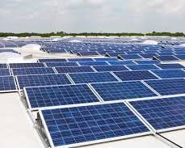
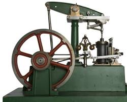
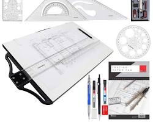
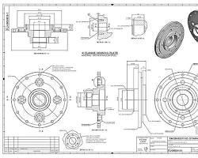

コース紹介
エネルギー機械コースでは、輸送機械や発電所等の産業インフラの設計と運用に必要な技術を学びます。また、水素エネルギー等のクリーンエネルギーの創生と貯蔵、自然災害の予測分析など、人々のより良い生活と環境との共生を目指した技術についても学びます。
カリキュラム
大阪公立大学工業高等専門学校のエネルギー機械コースについての学びは、以下のような内容を含みます。
-
基礎工学科目
- 数学: 工学に必要な数学的基礎を学びます。
- 物理学: 力学、熱力学、電磁気学などの基礎を学びます。
- 化学: 材料科学やエネルギー変換に関する基礎を学びます。
-
専門科目
- 熱工学: 熱エネルギーの基本原理や応用を学びます。 
- 流体力学: 流体の性質と流れの原理を学びます。
- 機械設計: 機械部品の設計方法や解析を学びます。  
- エネルギー変換技術: 各種エネルギー源からのエネルギー変換技術を学びます（例：火力発電、再生可能エネルギー）。
- 材料力学: 機械材料の特性や強度について学びます。
- 制御工学: 機械システムの制御方法や理論を学びます。

-
実習・実験
- 機械工作実習: 実際の機械加工や製作を通じて、実践的な技術を習得します。
- エネルギー関連実験: 熱力学や流体力学の実験を通じて理論を実証します。
- 設計実習: 機械の設計から製作までを行い、実践的なスキルを習得します。
-
プロジェクト・研究活動
- 卒業研究: 自らの興味やテーマに基づいて、専門的な研究を行います。
- インターンシップ: 企業や研究機関での実務経験を積む機会があります。
-
その他の活動
- 学外活動: 学会発表やコンテストへの参加など、学外での活動も奨励されています。
- 資格取得支援: 技術士や機械設計技術者などの資格取得支援があります。